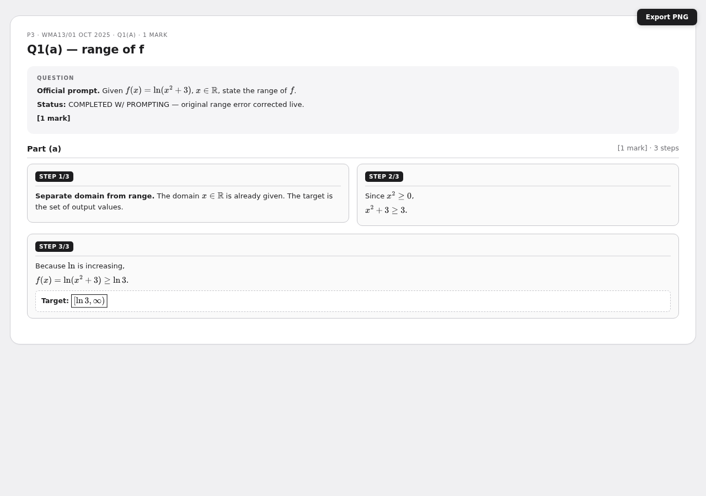
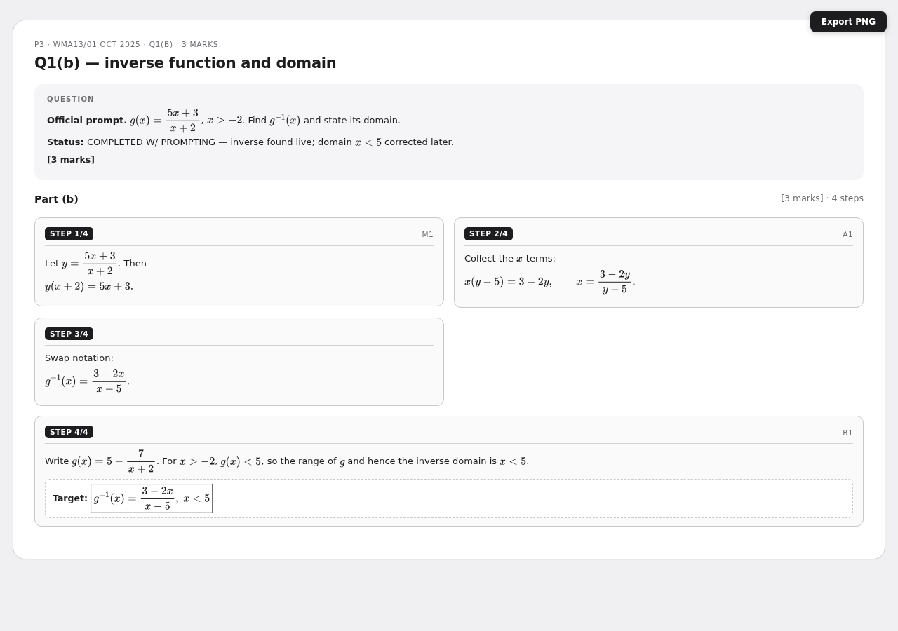
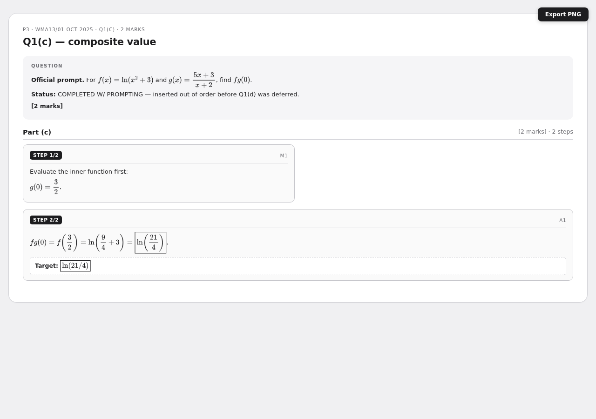
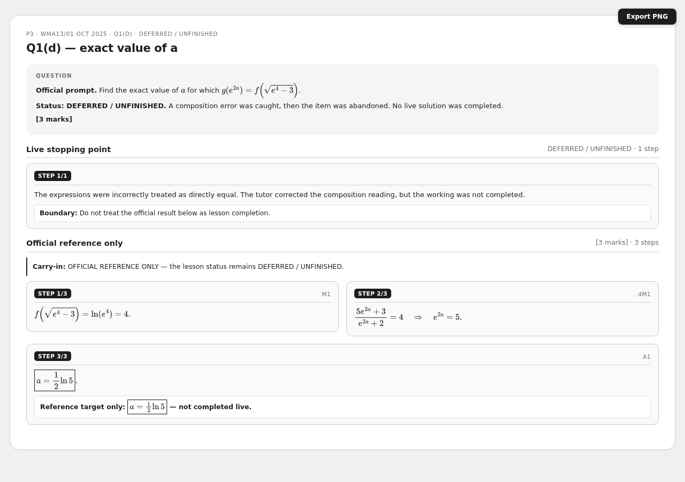
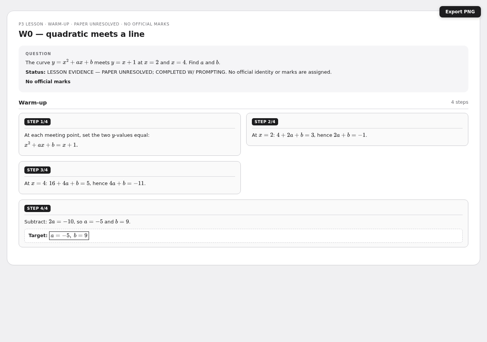
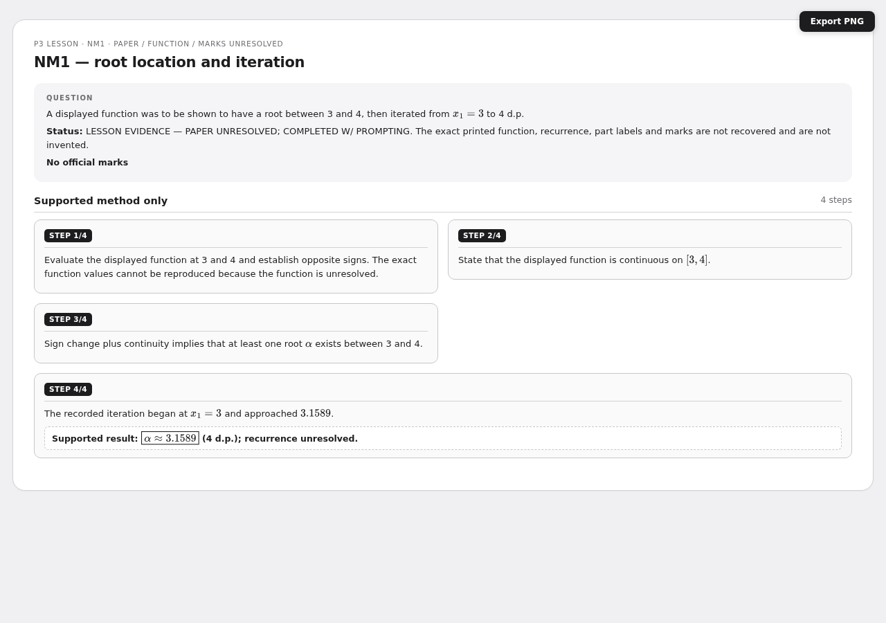
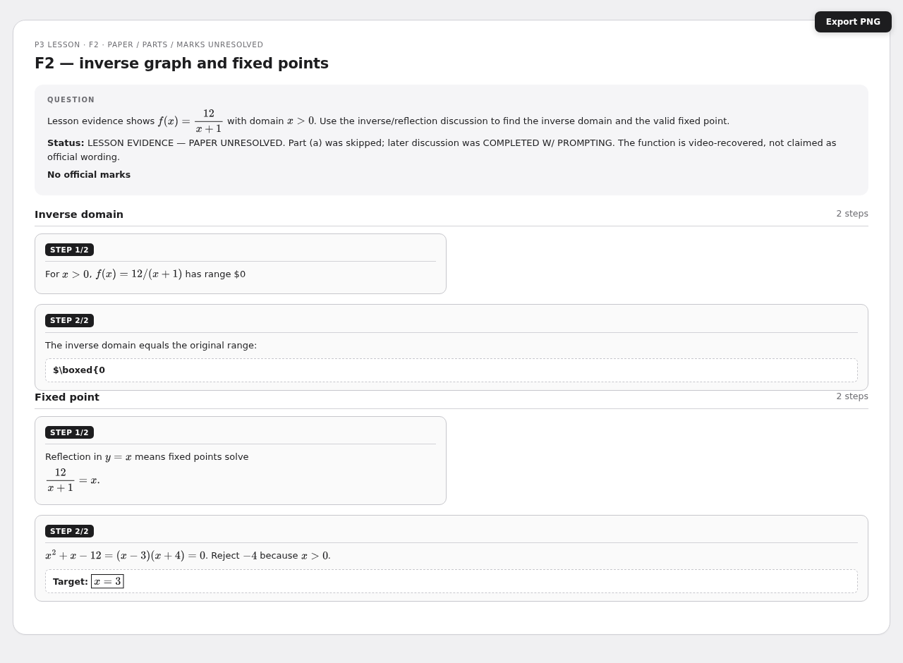
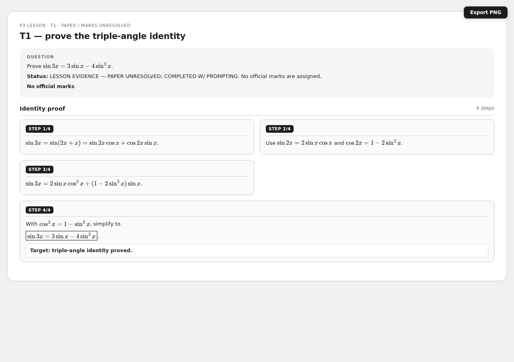
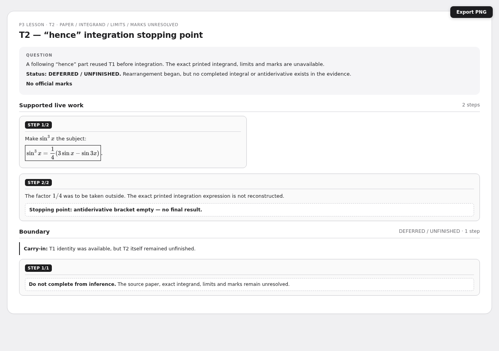

23 June P3 & Calculus
Multi-step flashcards for the exact lesson inventory. Each card is one PNG with the question header visible and per-step gray work boxes designed as Anki Image Occlusion masks.
9 cardsP3Multi-step
Q1(a) — range of f

Q1(b) — inverse function and domain

Q1(c) — composite value

Q1(d) — exact value of a

W0 — quadratic meets a line

NM1 — root location and iteration

F2 — inverse graph and fixed points

T1 — prove the triple-angle identity

T2 — “hence” integration stopping point
